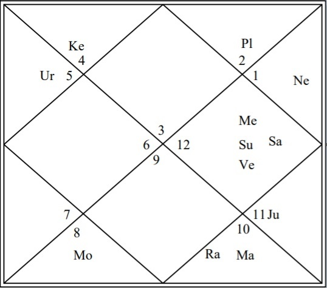

Vēdic astrology is an ancient form of divination that draws inferences and predictions from the astronomical data cooresponding to ones place and time of birth. The philosophical and academic foundation of this art form are found in texts recovered from the middle ages that describe the observed coorelation between planetary positions and resultant characteristics and events in the lives of those who had such planetary positions present at the time of birth. These ancient texts are from a long tradition of careful observation combined with intuition. While such texts are very important, more important is ones ability to interpret them and apply their contents.
The planets are constrained to a narrow belt in the sky called the Zodiac. The orbit of the planets around the sun is thus like a disk. Classical texts only consider the Sun, the Moon, Mars, Mercury, Jupiter, Venus, and Saturn as Graha. Two additional Graha are found by a mathematical computation that finds the position of the Graha called Rāhu. Exactly opposed, at 180° away, is the final Graha called Ketu. Uranus, Neptune, and Pluto are given almost no mention in the classic texts though some astrologers use them to draw inferences.
The 360° Zodiac is divided into 12 equal portions of 30° length each called Rāśi. These are the 12 familiar signs beginning with Aries and ending the Pisces. The positions of planets are plotted on the Zodiac that is adjusted by the ayanamsa. The most widely used ayanamsa is Lahiri, and it is considered to be the most accurate. To plot the position of each Graha, an ephemeris is used to find the topical position of the Graha. Then the ayanamsa is computed, as if drifts by a fixed amount each year, and this value is subtractd from the topical position to find the position of the Graha.
The signs, in order, are as follows:
The Graha a specific relationships with each other as follows
| Graha | Friendly towards | Neutral towards | Enemy towards |
|---|---|---|---|
| Sun | Moon, Mars, Jupiter | Mercury | Venus, Saturn |
| Moon | Sun, Mercury | Mars, Jupiter, Venus, Saturn | none |
| Mars | Sun, Moon, Jupiter | Venus, Saturn | Mercury |
| Mercury | Sun, Venus | Mars, Jupiter, Saturn | Moon |
| Jupiter | Sun, Moon, Mars | Saturn | Mercury, Venus |
| Venus | Mercury, Saturn | Mars, Jupiter | Sun, Moon |
| Saturn | Mercury, Venus | Jupiter | Sun, Moon, Mars |
Each Graha owns signs as follows
| Graha | Exalted | Moolatrikona | Owns |
|---|---|---|---|
| Sun | Aries up to 10° | Leo up to 20° | Leo |
| Moon | Taurus up to 3° | The rest of Taurus | Cancer |
| Mars | Capricorn up to 28° | Aries up to 12° | Aries and Scorpio |
| Mercury | Virgo up to 15° | Virgo from 15° to 20° | Gemini and Virgo |
| Jupiter | Cancer up to 5° | Sagittarius up to 10° | Sagittarius and Pisces |
| Venus | Pisces up to 27° | Libra up to 5° | Taurus and Libra |
| Saturn | Libra up to 20° | Aquarius up to 20° | Capricorn and Aquarius |
In ascending order, the situation of a Graha is worst if debilitated, less worse if in an enemy sign, okay if in a neutral sign, better in in a friendly sign, even better if in own sign, very good if Moolatrikona, and the best if exalted.
Suppose Jupiter is in the sign of Leo. Looking at the above table, observe that Leo is owned by the Sun and that Jupiter is friendly towards the Sun. Hence, Jupiter is in a friendly sign. Now suppose that Mars is in the sign of Taurus. Observe that Venus owns Taurus and that Mars is neutral towards Venus. Hence, Mars is in a neutral sign. Now suppose that the Moon is also in the sign of Taurus. Because the Moon is neutral towards Venus, it is said that the Moon is in a neutral sign. The fact that Venus is an enemy towards the Moon is not particularly relevant here. Should the Moon be in the first 3°, he will be considered as exalted, which is very good. Otherwise, the Moon in the remaining degrees of Taurus will mean that he is in his Moolatrikona sign. The same logic applies to all the other Graha as per their sign and degree.
This is a semi-randomly created North-Indian style chart. The numbers coorespond with the signs, and the space with Asc in it is the sign that was rising on the east horizon at the time of birth. In this case, it is the 12th sign that is Pisces. This sign is also called the 1st house. Another name for the 1st house is the Ascendant. The signs progress in a counterclockwise direction and thus the next sign is Aries that is also the 2nd house. The pattern continues. In the 3rd house, there are the Moon and Mars. Their placement in the same sign means that they are conjunct.
A quick and easy tool to calculate your own horoscopic chart is at VedicAstrology.us.com. The only inaccuracy of this tool is that it displays the mean node instead of the true node. For more information on why the true node should be used instead, please view the arguments presented here. For now, it's better to use this simple and convenient tool despite this problem.
Here is the Horoscope of Einstein. It was computed using the free service at AstroSage.
The Graha are indicated by the first two letters of their names. A quick look at this chart reveals that Venus (Ve) is in the 12th sign that is Pisces. That means that Venus is exalted. This is very good. Counting 5 places counterclockwise from the Ascendant, observe that the number 7 is there denoting the sign of Libra. As this is the 5th house and ruled by Venus, we say that Venus is the 5th lord.Interpretation of the chart would thus include that the 5th lord is exalted and thus that matters represented by the 5th house will thrive. Among other things, the 5th house represents intelligence and academic pursuits in a college or university. The other Graha Venus is with all influence this in their own special way, and conclusions can never be drawn from a single Graha. However, the strength of the Graha signifying intelligence did coorelate with a very intelligent mind.